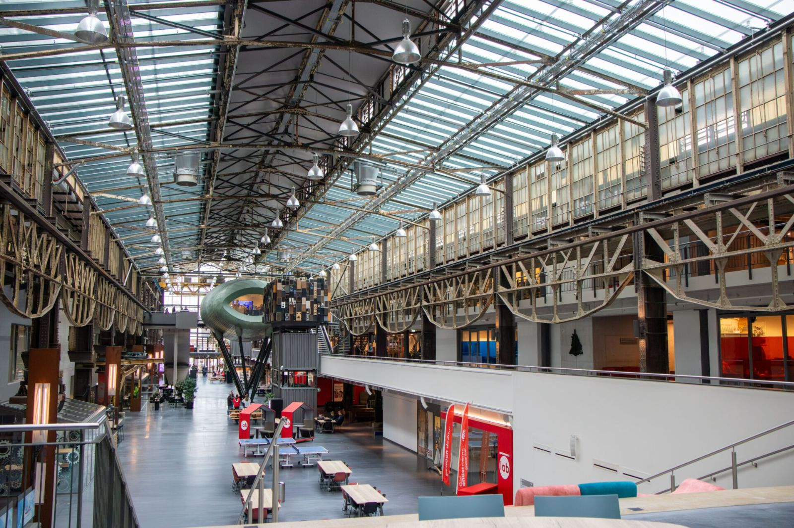

Uit de praktijk
Organisaties in bouw, installatie, toelevering en onderwijs werken met ons. Hieronder vijf verhalen, met naam en gezicht, opgebouwd als situatie, keuze, aanpak, verandering, resultaat en wat we leerden.
 Hollander Techniek · Strategy en TransformationVan kennisverschillen naar één manier van digitaal samenwerken
Hollander Techniek · Strategy en TransformationVan kennisverschillen naar één manier van digitaal samenwerken
ROC van Twente · CapabilityDocenten en studenten klaarstomen voor de digitale bouwpraktijk Vastbouw · TransformationDigitaal werken op de bouwplaats, met de mensen die het doen
Vastbouw · TransformationDigitaal werken op de bouwplaats, met de mensen die het doen Brummelhuis · CapabilityRevit-modelleurs opleiden in de eigen showroom en projecten
Brummelhuis · CapabilityRevit-modelleurs opleiden in de eigen showroom en projecten Hoppenbrouwers Techniek · Capability en TransformationEen leerpad voor installatietechnisch modelleurs op meerdere vestigingen
Hoppenbrouwers Techniek · Capability en TransformationEen leerpad voor installatietechnisch modelleurs op meerdere vestigingenPartners en klanten


Kennispartner van BOB Opleidingen voor de opleiding BIM-Modelleur. Onderdeel van Digital Construction Group.
Wil je met een van deze klanten spreken?
Dat regelen we. Bel Melvin, dan brengen we je in contact met iemand die het traject van binnenuit kent.
We reageren dezelfde werkdag. Liever eerst zelf kijken? Doe de zelfscan.
Melvin van PuffelenDirecteur BIM4ALL Academie“Meestal is één gesprek genoeg om te weten of, en hoe, we kunnen helpen.”